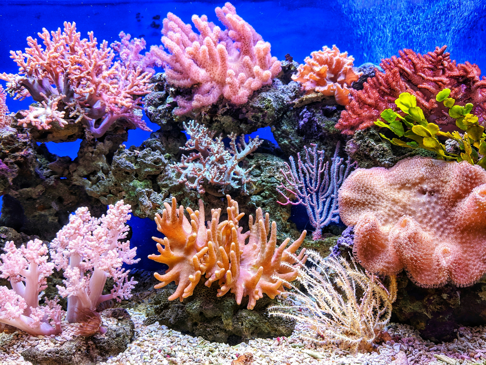

Welcome to Aquarian Adoption! An interactive website where you can explore some of the ocean's most fascinating creatures and take them home! Here you can learn fun and important facts about sea creatures that you could personally have within a couple of weeks!

For the best experience possible please look into downloading our app! This way you can get updates and notifications on new animals to adopt and when others are moving in with a household! This is highly recommended for those who have or are in the
process of receiving their new friend, it's good for new daily tips, helpful information on your friend, lets you easily submit your care recordings, and an easier way to receive immediate communication if needed!
Note: Before applying to adopt, please make sure you have everything listed or else you'll be ineligible to adopt one of our creatures. Thank you!
Now when adopting one of these creatures there are a few things we keep in mind when making sure you can take care one of these animals:
- A large saltwater tank or aquarium with a stable lid and enough space.
- Proper food and daily care routines.
- A filtration system to keep the water clean.
- Correct water temperature and salty levels.
- Plants, rocks, or coral to create a safe habitat.
This is necessary for the basic survival of your new aquarian friend and we will make sure this is already established before being able to purchase your new companion.
Having your new friend stay healthy, active, and well-nourished is essential for anyone who cares for animals, but especially with sensitive creatures, such as those you can adopt here.
Keeping the water safe from waste, harmful chemicals, and debris is so important and will also be addressed and obtained upon being approved.
This is mandatory to make sure your new friend can live a long, healthy life and these tests should be sent to us every two weeks, until addressed otherwise, to ensure the animal's safety.
It's important to remember where these creatures are coming from: the fast ocean. Your job as a caretaker is to make sure they feel as home as possible!
Adopting a sea creature is a huge deal and we at Aquarian Adoption will treat it as such! Normal check ins, emails, and calls will be received to any person who successfully adopts a creature and all terms will apply and be discussed as soon as you're accepted
and especially upon adoption!
Please feel free to call us if you have any questions about anything and we will be more than happy to assist you as soon as possible!